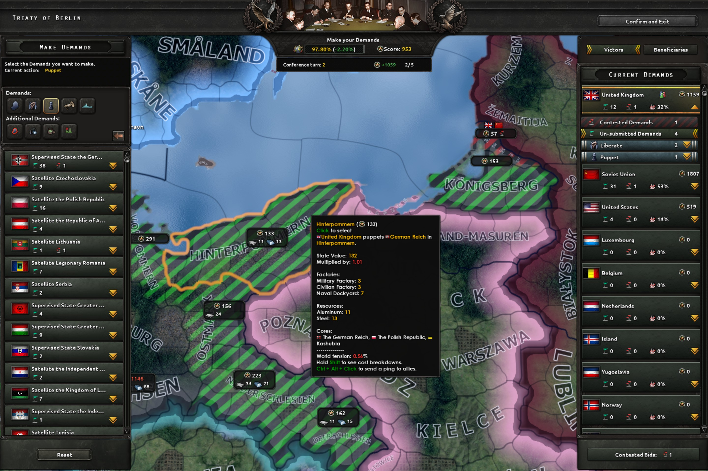
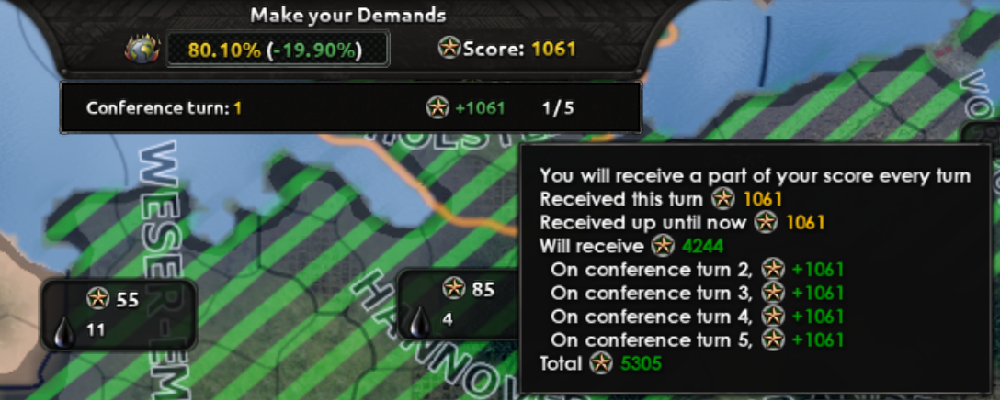
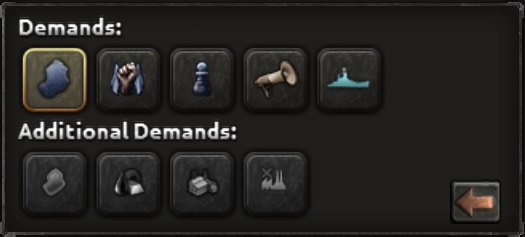
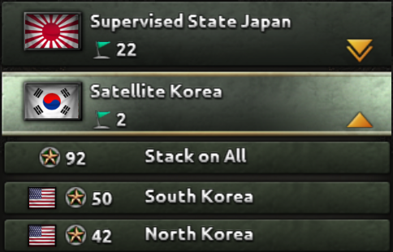
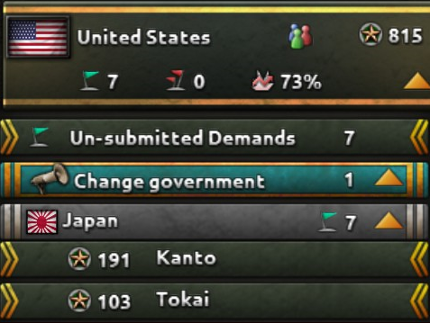
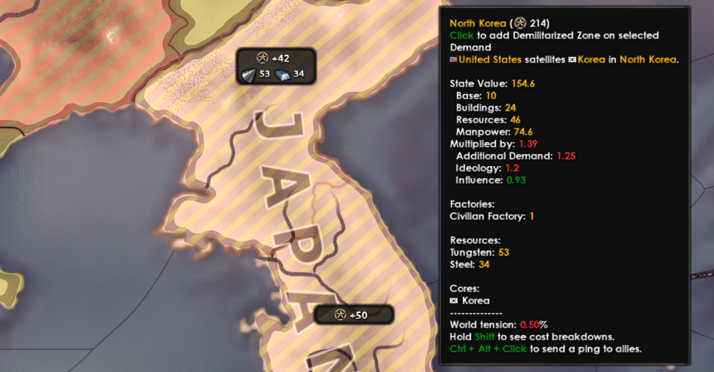
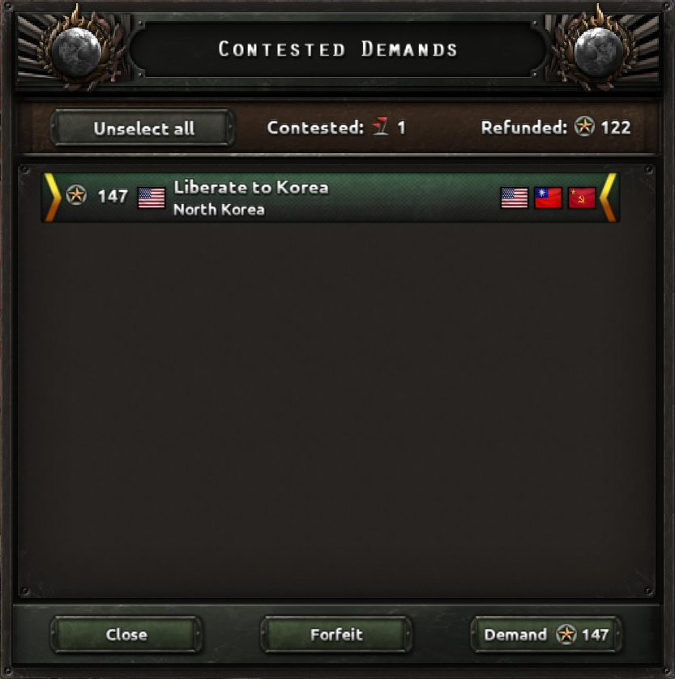

和平会议
原页面：Peace conference
和平会议允许战争的胜利者决定战败国家的战后地位，其方式是通过demands体系。
概述

在战争期间，双方的交战国都会积累战争参与度，这是一个表示它们对自己一方所做相对贡献的百分比。一方的投降或有条件投降会结束战争，根据各胜利者的战争参与度计算其war score，并打开和平会议界面。
会议在一系列turns中进行。如果只有一位胜利者，战争贡献会在会议开始时分配；如果有多个胜利者，则在最初五个回合内分配。在每个回合中，所有胜利者可以同时为州或舰船选择并提交要求。如果多个胜利者提交了相互冲突的要求，就会产生contest，胜利者可以在后续回合中继续争夺，直到除一方之外全部放弃。
每项要求都涉及以下角色：
- Negotiator——提出要求的胜利者。
- Beneficiary——最终将成为该要求新所有者的国家。这通常与谈判方相同，除非该要求是代表另一位胜利者提出的，或者属于会产生傀儡国、被解放国家或被迫更换政府的类型。
- Loser——失去被要求州的国家。
每项要求的花费受多种因素影响，包括要求类型、被要求州的价值、谈判方的意识形态、受益方对该要求是否拥有核心或宣称、该要求与谈判方拥有的州的邻近程度，以及是否有另一位胜利者已对它提出要求或争夺。战争贡献是有限的资源，因此玩家常常不得不优先考虑对自己最有价值的要求。
当所有胜利者退出会议时会议结束，通常是在所有战争贡献都已用尽之后。
界面
和平会议界面由以下部分组成。
贡献与回合面板

和平会议界面的顶部显示所选要求带来的世界紧张度影响以及玩家当前可用的战争贡献。当前战争贡献下方是当前会议回合。该数值右侧是将于下一回合开始时发放给玩家的战争贡献，以及用于发放剩余战争贡献所剩的回合数。
将鼠标悬停在战争贡献数值上会显示提示框，概述玩家有权获得的战争贡献总量，包括当前可用量和未来回合将获得的量。
「提出要求」面板
「提出要求」面板提供控件以选择以下要求类型：
- 取得州要求——把选定的州吞并给谈判方所属国家。玩家还可以通过在「当前要求」面板中选择另一位胜利者的国家地块，将其指定为这次吞并的受益方。
- 解放要求——根据游戏脚本，把选定的州解放给对其拥有核心或宣称的国家。如果接收国不存在，它将被创建。其意识形态将是其原始 tag 的意识形态，除非它在游戏过程中发生了改变，这种情况下将是它变成occupied之前的最后一个意识形态。
- 傀儡要求——用选定的州创建一个傀儡国，或在适用时将其加入谈判方名下现有的傀儡附属国。民主制谈判方通过这些要求只能创建supervised state傀儡国。
- 更换政府要求——用选定的州创建一个独立国家，但其政府将拥有与谈判方相同的意识形态。

启用 DLC  唯有鲜血后，还包含以下额外选项：
唯有鲜血后，还包含以下额外选项：
- 取得海军要求——获取战败国的主力舰（航空母舰、战列舰、重型巡洋舰）。单独的屏卫舰（轻型巡洋舰、驱逐舰、潜艇）不会列出；而是会在对每艘主力舰的要求中自动按比例附带失败方的一部分屏卫舰。
- 添加非军事区要求——五年内禁止在选定的州部署军事力量。
- 添加资源权要求——使该州的资源在五年内可供谈判方使用。地图上为每个州显示的资源反映的是升级后的潜在资源，可能看起来高于会议结束时实际获得的资源。
- 添加赔款要求——在五年内将该州当前民用工厂的一半提供给谈判方。
- 添加拆除军事工业要求——移除该州的军用工厂，削弱战败国制造武器的能力。
非军事区、资源权、赔款和拆除军事工业选项只能与建立傀儡或更换政府要求结合使用。

选择一种要求类型会列出该类型可用的要求，并按country tiles分组。当选择「取得州」或「取得海军」类型时，国家地块代表战败国；当选择「傀儡」「解放」或「更换政府」类型时，它们代表将由此产生的附属国/分离国。每个国家地块上的绿旗和红旗图标可让人一眼看出该国家无争议和有争议要求的数量。
选择一个地块会展开该国名下可用的要求列表。将鼠标悬停在每项要求上会显示提示框，其中包含该要求的更多细节，包括其花费、受益国、将创建的傀儡类型、其他正在争夺的国家、世界紧张度影响等。悬停期间按住Shift键会显示该要求的花费修正值的详细展开信息。一旦开始投标，每项要求上出现的小国旗表示哪些国家正在对它投标。
选择一项要求会把它作为未提交的要求加入「当前要求」面板，并从可用战争贡献中扣除相关的要求花费。再次点击该要求会取消未提交的要求，退还战争贡献。
「当前要求」面板
在「提出要求」面板中的选择会加入界面右侧的「当前要求」面板，该面板由「胜利者」列表和「受益方」列表组成。

「胜利者」列表默认显示，列出已选的要求，并将它们按国家地块分组。每个国家地块显示该国名称、可用战争贡献、无争议与有争议要求的数量，以及战争参与度百分比。选择某个国家地块会使其成为取得州要求的受益方。默认情况下，玩家所属国家的地块处于选中状态，直到选择另一个地块为止。当前受益方以黄色横条标示。
选择每个地块右侧的黄色箭头会展开该国提出或为其提出的当前要求列表。在该列表中，未提交的要求会在回合结束提交之前用黄色尖括号括起。点击某项未提交的要求会取消它，并退还从玩家战争贡献中扣除的点数。回合结束后，如果这些要求无争议，尖括号会被移除，表示这些要求现已提交。
每个国家要求列表的其余部分显示前几个回合已提交的要求，按失败方和要求类型排列。胜利者无法取消前几个回合已提交的要求，除非另一位胜利者决定争夺它。当某位胜利者离开会议时，其国家地块中会出现一个绿色对勾。
选择「受益方」按钮会切换到「受益方」列表，显示从胜利者提出的「傀儡」和「解放」要求中获得州的傀儡国和被解放国家。该列表为只读，这些国家不能在此面板中被直接选为受益方。相反，它们在某个州上的受益方身份由「提出要求」面板中其国家地块下可用的要求决定。
交互式地图
在界面中央，地图以图形方式表示会议期间各州的当前状态，根据所选要求类型提供信息，并允许玩家像在「提出要求」和「当前要求」面板中那样选择或取消选择各州上的要求。将鼠标悬停在一个州上会显示提示框，其中包含基于当前所选要求类型的要求信息，包括花费明细。悬停期间按住Shift键会显示该要求的花费修正值的详细展开信息。

地图会根据「提出要求」面板中当前选中的要求类型更新。符合所选要求类型且玩家支付得起的州会以绿色高亮显示。如果以当前战争贡献支付不起该州，它就会失去绿色高亮。选择一项要求后，相关州会以蓝色高亮显示。在后续回合中，如果该州在无争议的情况下被成功要求，其基础颜色会变为新所有者的颜色。如果某个州存在争议，它会以红色高亮显示。
每个州上都会显示一张信息卡，包含以下信息：
- 战争贡献点数花费
- 资源
- 民用工厂数量（如果选择了添加战争赔款要求）
- 军用工厂数量（如果选择了拆除军事工业要求）
- 会议期间对该州投标的国家旗帜
- 绿旗，用于表示该州已被无争议地要求
- 红旗，用于表示该州正在被争夺
「有争议的要求」窗口

如果另一位胜利者提交了与玩家相同的要求，那么下一回合用于该要求的战争贡献会被退还，并会显示「有争议的要求」窗口。「有争议的要求」窗口显示有争议要求的总数、退还的战争贡献总量，以及有争议要求的列表。
每项要求显示的信息包括争夺它的新花费、要求类型以及州或舰船的名称，还有参与争夺的国家。将鼠标悬停在有争议的要求上会显示提示框，其中包含额外信息，包括其他胜利者要求的详情。玩家可以从列表中单独选择要求以采取行动，也可以使用「全选」按钮。
选择「关闭」会关闭「有争议的要求」窗口而不做决定。「提交要求」按钮将被重新标记为「有争议的投标」，选择它会提示玩家打开「有争议的要求」窗口，在结束回合前做出决定。
选择「放弃」会放弃选定的要求，使玩家保留退还的战争贡献。选择「要求」将继续争夺选定的要求。
在此窗口中做出的决定不会阻止玩家在结束回合前从会议界面中随后选择或取消选择相同的要求。
其他控制
位于「提出要求」面板底部的「重置」按钮使玩家能够取消当前回合内所有未提交的要求，从而将战争贡献恢复到原值。应当注意，该按钮对前几个回合已经提交的任何要求都没有影响。
标有「提交要求」的按钮位于显示玩家当前要求的面板底部，用于提交所有未提交的要求并结束当前回合。如果玩家无法满足所选要求相关的财政义务，该按钮将变得不可用。如果要求存在争议，「提交要求」按钮会变成「有争议的要求」按钮。在玩家于「有争议的要求」窗口中确定适当的行动方案之前，这一状态会一直保持。
「确认并退出」按钮表示玩家方面会议的结束以及和平会议界面的关闭。只有当「当前要求」列表中没有未提交的要求时，该按钮才可用。选择「确认并退出」按钮后会显示警告，敦促玩家在退出前确认与和平会议相关的所有必要操作均已完成。
会议机制详解
以下信息旨在让玩家更深入地理解会议机制如何运作以及各种数值如何计算。这些信息可能会在未来补丁中发生变化，因此鼓励读者查看最新的补丁更新日志，以防最近的更新已使本文的管理工作落后于版本。
Participants
会议在失败方投降时启动，失败方可能是：
- 单独与获胜方交战、且不属于阵营或虽属某个阵营但其盟友均未参战的国家。
- 多个国家，如果它们同属一个阵营且该阵营的主要国家全部投降。该阵营中参与战争的所有非主要国家将自动投降。失败阵营中未参战的国家会被排除在和平会议之外。
- 属于获胜阵营、此前曾被失败阵营占领，随后其半数或更多胜利点被与失败阵营作战的第三方阵营占领的国家（一个常见例子是史实游戏后期波兰）。
获胜方将包括所有与失败国或失败阵营交战的国家，无论是否为盟国。会议中的获胜国家之间有可能彼此处于不同的战争中。
如果阵营领袖通过外交请求有条件投降并被接受，那么该领袖及其阵营成员将构成失败方，而获胜方将由接受投降的阵营领袖及其阵营成员组成。其他阵营将被排除在外。
战争贡献
和平会议从分配war score开始，这是一种用于对可用要求投标的政治货币。授予每位胜利者的战争贡献计算如下：
- w = svpc, where:
- s is the peace score scale factor, a constant in the 定义文件 LUA file, currently defined as 1.35.[1]
- v is the combined state value of all states controlled by the enemy at the start of the war.
- p is the war participation of each victor, a percentage calculated by dividing the total of each participant’s war participation points into the total of all participants’ war participation points of the same side.
- c is a conditional surrender factor (only active if the loser conditionally surrenders) equal to the loser's surrender progress (represented by the red/blue bar at the top of the war summary window) at the time that they conditionally surrender.
战争贡献在会议期间按以下规则分配：
- 当会议中只有一个获胜国时，战争贡献总量会在第一回合授予该国。
- 当会议中有多个胜利者时，每位胜利者的战争贡献都会分五个回合以 20% 的增量发放。[2]
- 存在一个minimum war score per turn速率，按每回合授予所有国家的战争贡献总量的 5% 计算。它会对比战争参与度低于 5% 的任何国家生效（假设游戏规则不重新分配其贡献），向它们发放这一最低值，直到其全部贡献都分配完毕，有可能在第五回合之前就完成。[3]
- 战争贡献不能从一位胜利者转移给另一位胜利者。
- 一旦胜利者收到其全部战争贡献，它们在后续回合不会再获得任何贡献。
- 单胜利者会议的一个example：美国对古巴宣战并轻松获胜。古巴各州的合并价值为 120 点。美国是唯一的胜利者。为美国计算出的战争贡献为：1.35 * 120 * 1.0 = 162。全部 162 点在会议开始时分配给美国。
- An example of a multi-victor conference: 德国, the 苏联, and 立陶宛 declare war on Poland and win. The combined value of Poland’s states is 1000 points. Germany has 60% war participation, Soviet Union has 36% war participation, and Lithuania has 4%. The war score computed for each victor is:
- Germany: 1.35 * 1000 * 0.6 = 810
- Soviet Union: 1.35 * 1000 * 0.36 = 486
- Lithuania: 1.35 * 1000 * 0.04 = 54
- 每回合最低贡献率为 1.35 * 1000 * 0.2 * 0.05 = 13.5。德国和苏联的战争贡献将在最初五个回合以 20% 的增量分配给他们。由于立陶宛的战争参与度低于 5%，它将按每回合最低贡献率 13.5 获得其贡献，直到其全部 54 点分配完毕。这三个国家的分配情况见下表。
国家 Turn 1 Turn 2 Turn 3 Turn 4 Turn 5 德国 162 162 162 162 162 苏联 97.2 97.2 97.2 97.2 97.2 立陶宛 13.5 13.5 13.5 13.5 0
州价值
每个州的价值用于计算分配给胜利者的war score以及demand costs，它是该州基础价值、资源、人力和建筑的总和。这些数值在会议前后可能会变化，但在和平会议期间保持固定。
- 基础价值——每个州都有 10 点的基础价值。[4]
- 人力——按该州每 100,000 人口计 1 点计算。[5]
- 资源——该州内所有基础资源的总和。[6]由建筑（例如炼油厂）产生的资源不计入此计算。
- 建筑——州类别的点数价值加上每种building类型和等级的点数之和。下表列出了与州类别[7]和建筑相关的数值。[8]
| 州类别 | 数值 | Building | 数值 |
|---|---|---|---|
| 荒地 | 0 | 民用工厂 | 5 |
| 飞地 | 0 | 军用工厂 | 8 |
| 微型岛屿 | 0 | 海军船坞 | 5 |
| 牧业地区 | 4 | 炼油厂 | 5 |
| 小岛 | 4 | 燃料仓 | 5 |
| 乡村地区 | 8 | 火箭基地 | 1 |
| 发达乡村地区 | 16 | 核设施 | 10 |
| 稀疏城市地区 | 20 | 基础设施 | 1 |
| 城市地区 | 24 | 空军基地 | 1 |
| 密集城市地区 | 32 | 防空阵地 | 1 |
| 大都市地区 | 40 | 雷达站 | 4 |
| 特大城市地区 | 48 |
- As an example, at the start of 1936, the German state of Rhineland has a state value of 205.5, based on the following:
- Base value: 10
- Manpower: 6,150,000 ÷ 100,000 = 61.5
- Base resources: 35 steel
- Buildings: 99
- State category (Megalopolis): 48
- Military factories: 3 * 8 = 24
- Civilian factories: 4 * 5 = 20
- Infrastructure: 4 * 1 = 4
- Air bases: 3 * 1 = 3
- Total: 10 + 61.5 + 35 + 99 = 205.5
计算出的州价值会在和平会议中把鼠标悬停在一项要求上时显示在提示框中；悬停期间按住Shift键会显示四个构成数值的明细。在非铁人模式游戏中，玩家还可以在console中启用 tdebug 并将鼠标悬停在任意州上来查看州价值。
回合与要求
在每个回合中，会议中的所有胜利者都可以同时提出要求。玩家可以代表自己提出要求，也可以通过从「当前要求」面板中选择某位胜利者的国家地块来代表另一位胜利者提出要求。如果代表他人提出要求，则只能选择「取得州」类型。
当每位参与者提交其要求后，本回合结束；对玩家而言，这发生在选择「提交要求」按钮时。在每个回合结束时，游戏会评估所有要求以判定是否存在争夺。仅由一位胜利者提交的要求被视为无争议，并实质上授予该胜利者，直到另一位胜利者在未来回合决定选择该要求，或者直到会议结束。
如果多个参与者对同一个州（无论要求类型如何）或同一艘舰船提出要求，这些要求就会变为有争议。玩家会获得对任何有争议要求所花费的战争贡献的退款，并看到「有争议的要求」窗口。玩家可以决定以更高的花费继续争夺选定的要求，此时退款的战争贡献会重新投入争夺。
如果玩家决定放弃，他们可以保留退还的战争贡献。退还的战争贡献数量取决于该要求已被争夺的回合数：在争夺的第一个回合全额退还，但在之后的每个回合中，退款会减少 8%，最低降至 76%。[9]
要求花费
每个州的要求花费通过将该州的价值乘以各种修正值计算得出。由于胜利者的特征、战败州的特征以及已对该州提出的要求不同，同一项要求在不同胜利者之间的花费会有所差异。任何单项要求的花费上限为 9999 点。[10]
修正值是乘以州价值以增加或减少总花费的系数。小于 1.0 的系数会降低花费，而大于 1.0 的系数会提高花费。因此，1.2 的修正值代表增加 20%，而 0.8 的修正值代表减少 20%。要求提示框中显示的combined cost modifier（即「乘以」值）是通过把所有生效的修正值彼此相乘计算得出的。然后用该乘积乘以state value，得出该州的战争贡献花费。在和平会议中按住Shift键并将鼠标悬停在一项要求上时，要求提示框中会显示各项构成花费修正值的明细。
- As an example: Rhineland has a state value of 205.5 and the player, as democratic 法国, has captured it and wants to annex it. Assuming the cost modifiers in effect are Ideology (1.3), Influence (0.77), and Occupation (0.8):
- Combined cost modifier is: 1.3 * 0.77 * 0.8 = 0.8
- Cost to take state is: 0.8 * 205.5 = 164.4
下表描述了不论要求类型如何都适用的通用修正值。
| 类别 | 描述 |
|---|---|
| 影响力[11] | 范围从 0.7 到 1.0，取决于到你三种不同类型州中最近者的像素距离，其贡献权重分别来自谈判方的capital（20%）、最近的核心领土（30%）和最近的控制州（50%，包括和平会议中的投标）。如果有一个或多个控制州直接相邻，每个相邻州会使花费修正值降低 0.05，这可能使花费修正值降到 0.7 以下。小国从此计算中获得的折扣要少 35%。 |
| 有争议[12] | 一旦某个州陷入争议就从 1.2 开始，在该州存在争议期间每回合将 1.2 乘以自身递增，直到不再有争议或达到 15 的上限。 |
| 无争议[13] | 从 1.15 开始，一旦谈判方索要某个州，在该州无争议期间每回合按「1.15 乘以自身再加 0.15」的方式递增，最高到 1.6，直到该州陷入争议或达到 15 的上限。 |
下表描述了效果部分取决于要求类型的通用修正值。[14]
| 类别 | 描述 | Take | 傀儡国 | Force | 解放 |
|---|---|---|---|---|---|
| 可被解放 | 先前所有者的核心 | 1.05 | 1.05 | 1.05 | |
| 顺从度 | 谈判方占领州的顺从度 < 30% | 1.0 | |||
| 顺从度 | 谈判方占领州的顺从度为 30% 到 70% | 0.9 | |||
| 顺从度 | 谈判方占领州的顺从度 > 70% | 0.8 | |||
| 持续政治行动 | 失败方在前几个回合已被建立傀儡或被迫更换政府 | 0.85 | 0.85 | ||
| 盟友的核心 | 与谈判方同属一方的独立主要国家的核心 | 3 | 3 | 3 | |
| 防御战争 | 谈判方曾与失败方处于防御战争中 | 1.1 | 0.95 | 0.95 | |
| 拥有宣称 | 被独立的受益方宣称 | 0.9 | |||
| 意识形态 | 谈判方为法西斯主义 | 0.9 | 0.95 | 1.3 | |
| 意识形态 | 谈判方为共产主义 | 1.0 | 0.9 | 1.3 | |
| 意识形态 | 谈判方为民主制 | 1.3 | 1.2 | 0.9 | |
| 意识形态 | 谈判方为民主制；失败方当前为法西斯主义或共产主义 | 0.9 | |||
| 意识形态 | 谈判方为主要国家且为受益方；失败方为主要国家且为民主制或共产主义 | 0.8 | 0.8 | 0.8 | 0.8 |
| 意识形态 | 谈判方为主要国家且为民主制；失败方为主要国家 | 0.7 | |||
| 是核心 | 独立受益方的核心 | 0.25 | |||
| 是核心 | 被建立傀儡的受益方的核心 | 0.5 | |||
| 是核心 | 受益方的核心且不是失败方的核心 | 0.95 | |||
| 占领 | 谈判方占领州的顺从度 > 0 | 0.8 | 0.8 | 0.8 | 0.8 |
| 其他 | 受益方拥有休眠的民族认同（例如乌克兰） | 1.25 | |||
| 其他 | 不是谈判方的核心，且该谈判方对受益方拥有独立战争目标 | 1.25 | 1.25 | 1.25 | 1.25 |
| 其他 | 谈判方曾是失败方独立战争目标的对象 | 0.5 |
下表描述了基于谈判方对失败方拥有的战争目标的通用修正值。[15]
| 类别 | 描述 | Take | 傀儡国 | Force | 解放 |
|---|---|---|---|---|---|
| 战争目标 | 取得州 | 0.8 | |||
| 战争目标 | 夺取已宣称的州 | 0.5 | |||
| 战争目标 | 建立傀儡（国策） | 0.5 | |||
| 战争目标 | 取得核心州 | 0.2 | |||
| 战争目标 | 吞并一切（国策/决议） | 0.5 | |||
| 战争目标 | 内战 | 0.25 | |||
| 战争目标 | 推翻政府 | 0.5 | |||
| 战争目标 | 解放 | 0.5 | |||
| 战争目标 | Independence | 0.5 |
对于取得海军要求，游戏会列出每艘主力舰（航空母舰、战列舰和重型巡洋舰），然后为该舰分配该国屏卫舰（轻型巡洋舰、驱逐舰和潜艇）中的一份。每项要求的花费等于该主力舰的IC（即生产花费）乘以 0.005[16]再加上屏卫舰的IC乘以 0.005。[17]
- 作为一个example，德国在会议中向英国索要一艘由战列舰舰体改装而成的航空母舰，该舰附带 13 艘驱逐舰。该航空母舰的IC花费约为 9000，而每艘驱逐舰的IC花费为 1000。总花费为 9000 * 0.005 + 13 * 1000 * 0.005 = 110。
还存在基于特定国家脚本的额外花费修正值，通常归类为条约与会议。一个主要例子是雅尔塔会议事件，如果西方领导人和苏联领导人都同意，就会在随后同盟国、轴心国和共产国际之间的和平会议中产生以下花费修正值：
- 对西方主要国家而言，西德各州享受 50% 折扣，东德各州承受 400% 惩罚；
- 对苏联而言，东德各州享受 50% 折扣，西德各州承受 400% 惩罚；
- 对西方主要国家而言，解放奥地利享受 50% 折扣。[18]
这些类型的花费修正值可能在和平会议之后仍然存在，如果围绕同一片领土再次爆发冲突，可能会导致不理想的要求花费。
结论与效果
当所有参与者退出会议时，和平会议结束；对玩家而言，这发生在选择「确认并退出」按钮时。如果其他胜利者争夺玩家的要求，玩家会被拉回会议中（在与 AI 对战时不太可能，但在多人游戏中可能发生）。
每项要求的世界紧张度变化计算如下：
- t = 2f * ln(3b + 5v + r + 2) ÷ 20, where:
- f = tension factor, depending on demand type
- b = total number of civilian factories, military factories, docks, and rocket sites in the state
- v = total number of victory points in the state
- r = total base resources in the state
解放州会降低紧张度，降低量因谈判方和失败国的特征（主要是生产建筑数量）而异[24]，再乘以 -1.0 的系数。[25]
取得舰船会每艘主力舰提高 0.25 紧张度。[26]非军事区、资源权、赔款和拆除军事工业要求按与该州相关的基础威胁乘以 0.25 计算。[27]和平会议产生的所有紧张度变化，无论是净增加还是净减少，都记在敌方阵营向其投降的那个国家名下。
成功投标取得的舰船将保留其先前经验的 25%。[28]
战败国是有可能在会议中存续下来的。这通常发生在胜利者集体未能索取失败方全部州的情况下。被吞并的州将处于被占领状态，除非它们是新所有者的核心领土；在长期占领期间或通过合作任务获得的顺从度将在会议结束后继续生效。被迫更换政府的国家往往会对获胜方持较差看法，而被解放的国家则往往持较好看法。
AI 行为
AI 在权衡对各个州提出要求的欲望时会采用一套复杂的通用规则和特定国家规则。下面提供了和平会议中 AI 通用行为的高层次概述。[29]
AI 会更有意愿对以下目标提出要求：
- 它自己的核心和宣称
- 与其控制的州相邻的州
- 代表上述盟友提出的盟友核心和宣称
- 从意识形态不同的国家取得的州
- 与其意识形态相符的索取类型
- 法西斯主义和中立主义国家倾向于吞并
- 民主制国家倾向于解放或更换政府
- 共产主义国家倾向于建立傀儡
AI 会不太愿意对以下目标提出要求：
- 在前几个回合被解放的国家的核心
- 存在争议的州
- 已被其他国家要求的州
- 被人类玩家占领的州
- 会使意识形态不同的国家受益的要求
- 飞地（即不与它所控制的州接壤，除非是核心/宣称）
- 其影响力范围之外的州，以下情况除外：
- 沿海首都
- 特定州（加利福尼亚、北岸、大伦敦地区、突尼斯、苏伊士、印度支那）
- 当取得方为欧洲国家时的特定州（直布罗陀、伊斯坦布尔、克里米亚）
- 岛屿州
- AI 盟友在第 12 回合之前的宣称
在所有情况下，如果 AI 对某个州的净欲望为 0 或更低，它就不会对该州提出要求，即使它有足够的战争贡献这样做。傀儡国通常根本不会提出要求，除非是针对它们自己的核心和宣称，或是代表其宗主国/盟友针对他们的核心和宣称。尚未观察到 AI 索取舰船。
如果 AI 谈判方之间的争夺持续超过两个回合，就会启动平局裁决功能，比较各谈判方剩余的战争贡献、到被要求州的影响力距离以及国家得分。由于这些因素权重相同，这些因素平均值更高的谈判方更有可能赢得平局裁决。[30]
「Strategy」
和平会议复杂的机制使得无法为每种情形提供全面的指导；不过，根据会议的构成，以下技巧可能会有所帮助。
会前准备措施
AI 胜利者在争夺中可能难以预测，而 AI 傀儡国尤其会浪费战争贡献。如果 AI 盟友对于击败敌人并非必不可少，让它们不参战将大大有助于让玩家更好地掌控会议，并确保所有州都得到妥善处置（即被取得、建立傀儡等）。
陆战伤害和占领往往是战争参与度增长中最大的因素。精通战斗会产生提高这些方面战争贡献的次生效果。对于能够投入足够海军和空军的国家来说，海战和空战也是极佳的贡献来源。租借往往投资回报最低，当物资能在玩家军队中得到更好利用时，就应避免租借。
对于非民主国家，通过间谍活动机制建立的合作政府使玩家能够利用顺从度花费修正值。这通常需要执行两次合作任务，因此玩家必须权衡其成本与收益。
Priorities
玩家通常应优先决定各州的归属，然后再选择海军舰船和其他要求。这是因为会议开始时计算出的战争贡献总量是基于州价值的，并不计入海军舰船或非军事区、战争赔款、资源等额外要求的价值。即使在只有一位胜利者、无需与 AI 争夺的会议中，玩家也可能没有足够的战争贡献来处置所有州并取得所有海军舰船，尤其是当失败方拥有庞大海军时。
如果与 AI 之间爆发了多场争夺，那么最好只在一到两个回合内坚持要求。这是因为玩家会在争夺的第一个回合之后开始永久损失部分战争贡献，并且会因为索取其他州而承担机会成本。当有多个州陷入争夺时，AI 会以每回合 1 到 2 项的速度开始放弃部分要求，但最终 AI 会顽固地坚持少数几项要求，玩家为争夺它们将面临收益递减。
善用花费修正值
玩家可以在会议期间利用两种强大的花费修正值来降低累计要求花费：
- 持续政治行动——一旦玩家对某个失败方提出建立傀儡或强制更换政府的要求，在后续回合中对同一个失败方的所有建立傀儡和强制更换政府要求都会便宜 15%。这使玩家能够在一个回合对某个便宜州建立傀儡或强制更换政府，然后在后续回合对失败国更昂贵的州获得折扣。
- 影响力——当玩家控制附近的州时，对某个州的要求会更便宜，尤其是当这些州位于边境时；这包括玩家在会议期间成功吞并的州，无论其花费多少。这使玩家能够在一个回合吞并一个便宜的州，并在后续回合对附近更昂贵的州获得折扣。
对于建立傀儡/强制更换政府的行动，两种修正值的效果可以叠加。例如，玩家可以在第一回合吞并一个便宜的州并对另一个便宜的州建立傀儡，然后在后续回合建立更多傀儡，此时两种修正值彼此相乘会带来更大折扣（被吞并的州可以在会议后转交给该傀儡国）。
对于只有一位胜利者的会议，这些技巧能腾出更多战争贡献用于其他要求（取得海军、赔款等）。在没有其他胜利者压力的情况下，玩家可以利用多个回合中吞并带来的影响力，从最便宜的州到最昂贵的州逐步处理整个国家，到最后一个州被吞并时已累计节省了大量花费。
对于多胜利者会议，玩家仍然可以从这些技巧中受益，但必须在使用它所需要消耗的回合数与来自竞争胜利者的压力之间取得平衡。
参考资料
- ↑ 定义文件中的 PEACE_SCORE_SCALE_FACTOR。
- ↑ 定义文件中的 PEACE_SCORE_DISTRIBUTION。
- ↑ 定义文件中的 PEACE_SCORE_MINOR_BOOST_FRACTION。
- ↑ 定义文件中的 STATE_VALUE_BASE。
- ↑ 定义文件中的 STATE_VALUE_MANPOWER_FACTOR。
- ↑ 定义于 \history\states\ 文件中。
- ↑ 定义文件中 STATE_VALUE_BUILDING_SLOTS_MULT 与 \common\state_category\ 文件中 local_building_slots 的乘积。
- ↑ 定义于 \common\buildings\00_buildings.txt 文件中。
- ↑ 定义文件中的 PEACE_CONTEST_REFUND_FACTOR。
- ↑ 定义文件中的 PEACE_ACTION_MAX_COST。
- ↑ 定义文件中的 INFLUENCE_ 修正值组。
- ↑ 定义文件中的 PEACE_COST_FACTOR_CONTESTED_ 修正值组。
- ↑ 定义文件中的 PEACE_COST_FACTOR_UNCONTESTED_ 修正值组。
- ↑ 定义于 \common\peace_conference\cost_modifiers\00_generic_peace.txt 文件中。特定国家的修正值也定义在此文件夹中。
- ↑ 定义于 \common\wargoals\00_invasion.txt 文件中。
- ↑ 定义文件中的 PEACE_COST_FACTOR_CAPITAL_SHIP_IC。
- ↑ 定义文件中的 PEACE_COST_FACTOR_SCREENING_SHIP_IC。
- ↑ 定义于 \common\peace_conference\cost_modifiers\yalta_peace.txt 文件中。
- ↑ 定义文件中的 TENSION_ANNEX_NO_CLAIM。
- ↑ 定义文件中的 TENSION_ANNEX_CLAIM。
- ↑ 定义文件中的 TENSION_ANNEX_CORE。
- ↑ 定义文件中的 TENSION_PUPPET。
- ↑ 定义文件中的 TENSION_FORCE_GOVERNMENT。
- ↑ 基于游戏内观察；部分因素尚未确定。
- ↑ 定义文件中的 TENSION_LIBERATE。
- ↑ 定义文件中的 TENSION_ TAKE_ONE_CAPITAL_SHIP。
- ↑ 定义文件中的 TENSION_ 修正值组。
- ↑ 定义文件中的 PEACE_ACTION_TRANSFER_NAVY_EXPERIENCE_RETAINED。
- ↑ 基于对 \common\peace_conference\ai_peace\ 目录中文件的分析以及游戏内观察。
- ↑ 定义文件中的 PEACE_BID_CONTEST_TIE_BREAKER_ 修正值组（于 1.16.3 版本引入）。
| 政治 | 意识形态 • 阵营 • 国策 • 理念 • 政府 • 傀儡国 • 流亡政府 • 外交 • 世界紧张度 • 内战 • 占领 • 力量均势 |
| 生产 | 贸易 • 生产 • 建造 • 装备 • 燃料 • 军工组织 • 国际市场 |
| 科研与科技 | 科研 • 步兵科技 • 支援连科技 • 装甲科技（也包括 未拥有绝不后退）• 火炮科技 • 陆军学说 • 特种部队学说 • 海军科技（也包括 未拥有全民持枪）• 海军支援科技 • 海军学说 • 空军科技（也包括 未拥有以血盟誓）• 空军学说 • Engineering科技 • Industry科技 • 特殊项目 • 科学家 |
| 军事与战争 | 战争 • 和平会议 • 陆军单位 • 陆战 • 师编制设计 • 坦克设计 • 陆军编制器 • 集团军 • 指挥官 • 作战计划 • 战斗战术 • 舰船 • 舰船设计（伦敦海军条约）• 海战 • 飞机设计 • 空战 • 经验 • 军官团 • 损耗与事故 • 后勤 • 人力 • 核弹 • 突袭 |
| 间谍活动 | 情报 • 情报机构 • 特工 • 任务 • 行动 |
| 地图 | 地图 • 省份 • 地形 • 天气 • 州 |
| 事件与决议 | 事件 • 决议 |